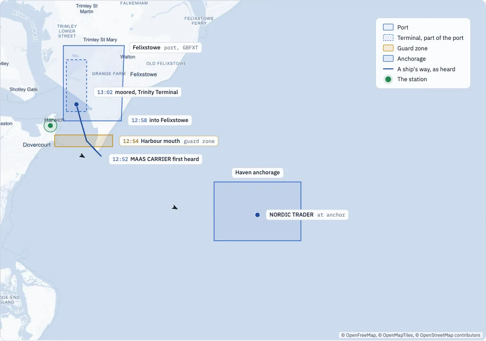
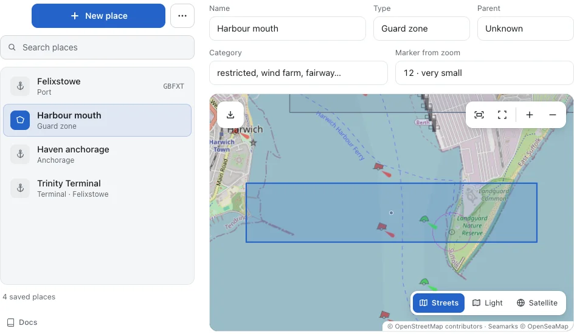
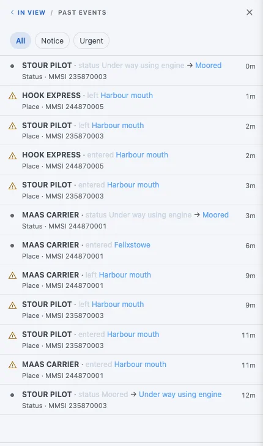
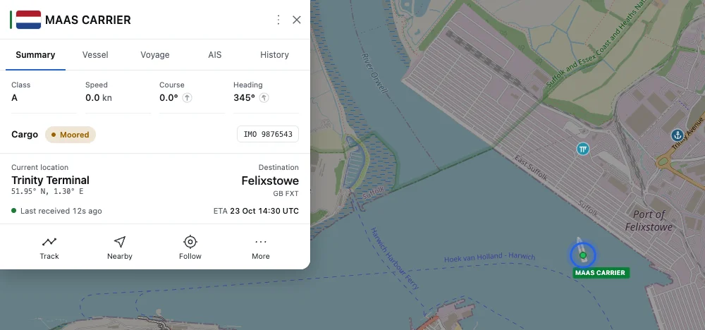
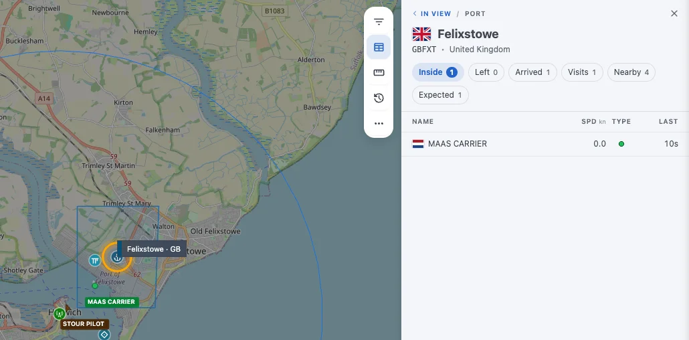
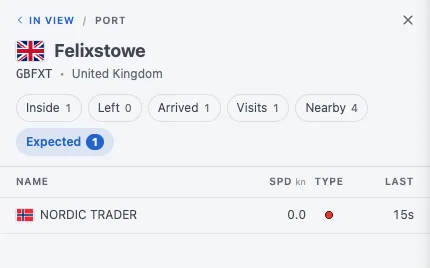
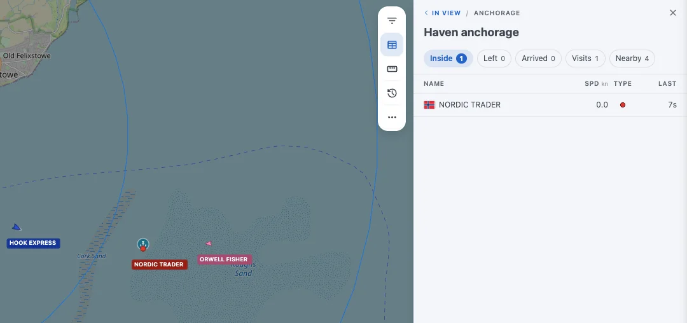

Geofencing: monitoring ports and guard zones¶
Places are the geofences of AIS-catcher: a port, a guard zone across the harbour mouth, any area you draw on the map. Your station then keeps track of who is inside, who came and went and who is on the way, and announces each crossing.

To an AIS receiver a ship is a dot with a name. You see it move, and that is about it. Geofencing changes that. Draw a few areas on the map, which AIS-catcher calls places, and the dots start telling stories: this ship came in through the harbour mouth, that one is waiting at anchor, a third is on its way to the port you care about.
Note
The ships in this series are a scripted replay in a test installation. Their names and numbers are made up, the behaviour of AIS-catcher is not.
A port and a guard zone¶
Two kinds of geofence do most of the work, and they behave differently on purpose.
- A port, like Felixstowe, with its UN/LOCODE GBFXT. A ship that steams through without stopping has not called there. Only a ship that stops counts, and ships that report the port as their destination are listed as expected.
- A guard zone, like the harbour mouth: any area you want to be told about. Every ship that crosses it counts, stopped or not, and each crossing is announced.
A port can have parts: Trinity Terminal is drawn as part of Felixstowe, so a ship alongside is at the terminal and in the port at the same time. There are more types: berths, anchorages, marinas, moorings, traffic sectors and whole waters such as a strait. The places documentation lists them all.
| Type | A visit counts | In the ticker |
|---|---|---|
| Port | After the ship has stopped for a minute | Arrivals and departures, as routine |
| Terminal, berth | After a stop | Not announced: the port already is |
| Anchorage | After a stop | Not announced |
| Guard zone | Every passage | Entering and leaving, as a notice ⚠ |
Drawing one¶
- Open the dashboard, then Settings and Places. Places are on from the start, kept in a
placesfolder beside the configuration; an older installation asks to switch them on when you add the first one. - Press New place, give it a name and a type, and draw its outline on the map.
- Save. The place is live at once, on the map and for every ship already inside it.

Each place is a small GeoJSON file, so outlines can come from elsewhere too: Import…, in the menu beside New place, takes a Feature from any GIS tool or from OpenStreetMap, and Paste shape, while you edit a place, replaces just its outline. Without the dashboard, point AIS-catcher at a folder of place files:
Command line
AIS-catcher -d 00000001 -N 8100 PLACES /home/pi/places
config.json
"tracking": { "places": "/home/pi/places" },
"services": [ { "port": 8100 } ]
One arrival, as the station saw it¶
The container ship MAAS CARRIER comes in from the North Sea, bound for "GB FXT". This is what the station recorded, by the clock in Harwich:
- 12:52 First heard south of the harbour mouth at 10 knots. Its destination already matches Felixstowe, so the port lists it under Expected.
- 12:54 Enters the Harbour mouth. A guard zone, so the ticker shows a notice.
- 12:56 Leaves the harbour mouth, two minutes and ten seconds later.
- 12:58 Enters Felixstowe, announced as routine.
- 13:00 Inside Trinity Terminal. The ship's card now names the terminal as its location.
- 13:02 Reports itself moored.
- 13:03 Stopped for a minute: the stay becomes a call, and the ship counts as inside the port.

Click a ship and its card says where it is now, in words rather than coordinates. When a ship lies inside several places at once, the most specific is named first: the terminal before the port.

Click a place and you get its ships, in tabs: who is Inside, who Left, who Arrived lately, the Visits with their times, the ships Nearby, and for a port the ships Expected. Point at a place's marker to see its outline.

Who is on the way¶
Crews type their destination by hand, and they type it in many ways. AIS-catcher matches it to your ports, first by UN/LOCODE and then by a name or alias that fits exactly one port. Case, spaces and punctuation do not matter, so "GB FXT" and "gbfxt" both find Felixstowe. A partial name never counts.
That is how the tanker NORDIC TRADER, waiting at the anchorage with "FELIXSTOWE" as its destination, shows under Expected before it has moved towards the port at all.

It does not cry wolf¶
AIS is noisy. A corrupted message can put a ship on the wrong side of the world, and a weak signal leaves gaps. Places are built to ignore that:
- A position has to be believable. One the ship could not have reached from its last at 60 knots is left out, unless the next one agrees with it.
- A crossing needs two positions. A ship enters when two positions in a row, at least ten seconds apart, are inside. One stray position across the line changes nothing.
- Silence does not end a stay. A ship heard again after an hour, still inside, keeps its original arrival time.
- A call needs a stop. The fishing boat ORWELL FISHER sailed straight across the anchorage and is listed as nearby, not inside. Only the tanker at anchor counts.

Places in the other tools¶
Everything above is available to other programs as well. The arrivals and departures are events, the ships inside a place are a list, and each ship has its visits. The next part asks the station about them, over HTTP and in plain words.
Where to go next¶
New to AIS-catcher, or setting it up step by step? Start with the Quick Start. Every option of this tutorial is in the documentation.
- Quick Start: install AIS-catcher and see your first ships, in a few steps.
- Places: every place type and every property of a place file, with examples.